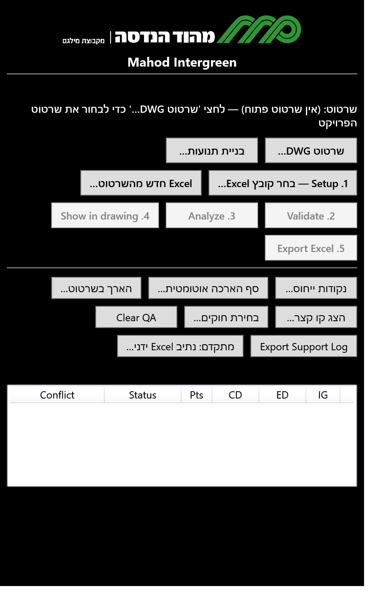
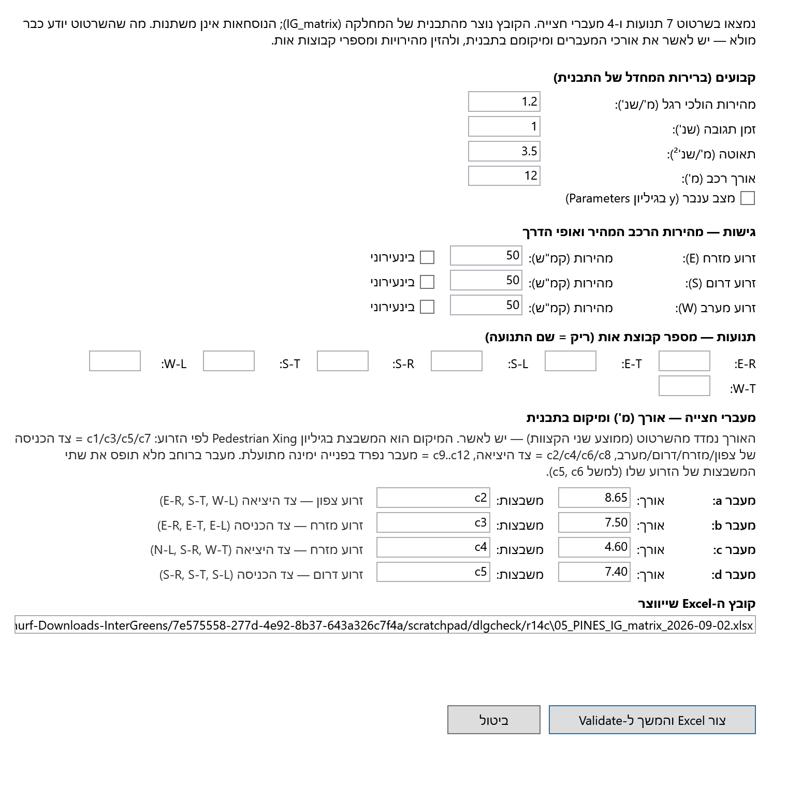
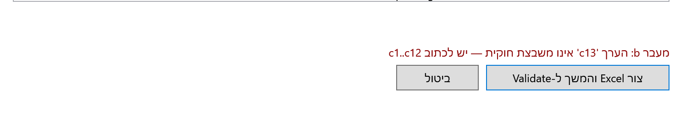
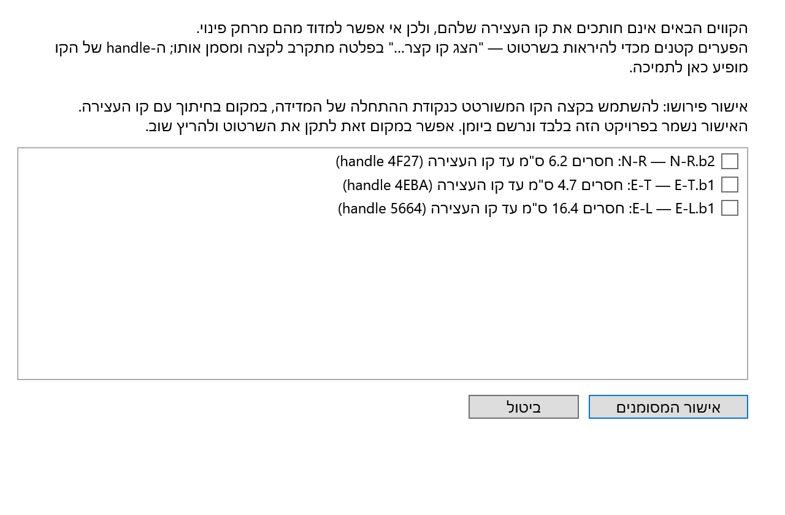
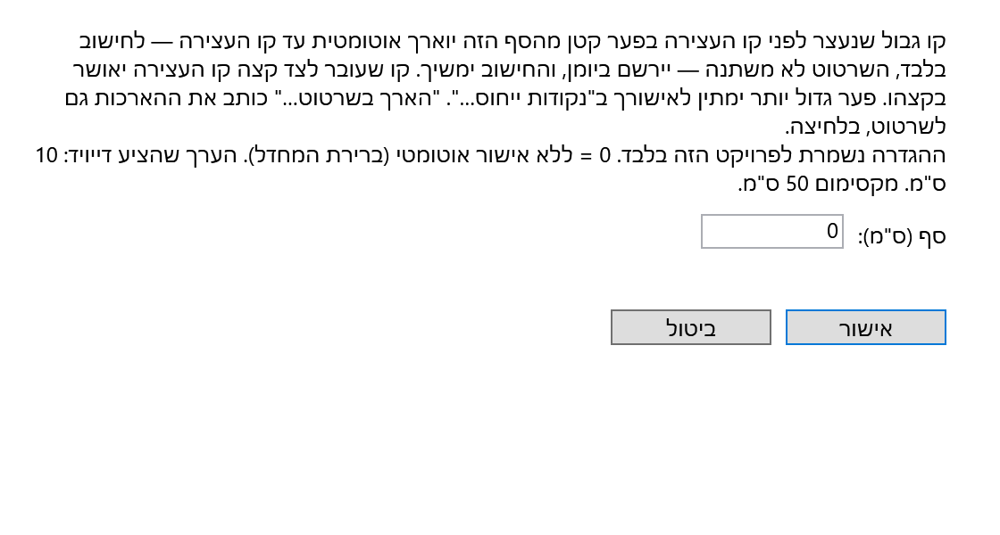
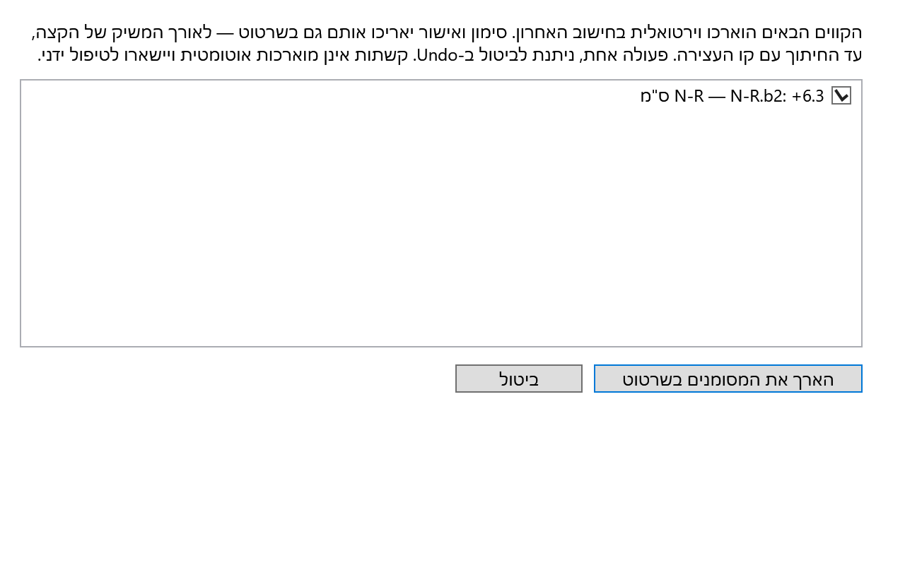

שורת הסטטוס בעברית אומרת בכל רגע מה הצעד הבא. השורה העליונה של הכפתורים היא תהליך העבודה (1→5); השורה התחתונה — פעולות תמיכה.
| כפתור | מה הוא עושה |
|---|---|
| שרטוט DWG… | בחירת שרטוט הצומת (או מעבר לשרטוט פתוח). |
| בניית תנועות… | בונה את שכבות התנועות מקווי המתכנן (סעיף א'). |
| 1. Setup — בחר קובץ Excel… | יש Excel לפרויקט? בוחרים אותו. |
| Excel חדש מהשרטוט… | אין Excel? הכלי יוצר אותו מתבנית המחלקה (סעיף ב'). |
| 2. Validate | בדיקת השרטוט: תנועות, חציות, קווים קצרים. |
| 3. Analyze | חישוב הקונפליקטים והמטריצה. |
| 4. Show in drawing | מציג את נקודות החישוב של השורה שנבחרה. |
| 5. Export Excel | קובץ תוצאות חדש ליד המקור. |
| נקודות ייחוס… הצג קו קצר… סף הארכה אוטומטית… הארך בשרטוט… | טיפול בקו גבול שאינו מגיע לקו העצירה (סעיף ג'). |
| בחירת חוקים… Clear QA Export Support Log | גרסת ההנחיות, ניקוי סימונים, לוג לתמיכה. |

קווי השפה וסימוני הנתיבים של מתכנן התנועה נשארים בשכבות שלו, כפי שהם. הכלי מעתיק את מה שמצביעים עליו לשכבות intergreen_* בצבעי המחלקה, ומסדר את ההעתק להתחיל בקו העצירה. לוחצים בניית תנועות… ועונים בשורת הפקודה:
| השאלה בשורת הפקודה | התשובה |
|---|---|
| גישת המוצא של התנועה [N/E/S/W] או Enter לסיום | N / E / S / W. Enter מסיים. |
| סוג התנועה [R / T / L / P] | R ימינה, T ישר, L שמאלה; P = מעבר חצייה, ואז אות המעבר (a, b, …). |
| גבול התנועה הראשון / השני — בחרי את הקו | מצביעים על קו השפה או הסימון. לכל קו: הקישי ליד הקצה שעל קו העצירה (נקודת ההתחלה). |
| קו העצירה של הגישה — בחרי את הקו | מצביעים על קו העצירה (או Enter אם כבר קיים ב־intergreen_stopline). |
לוחצים Excel חדש מהשרטוט…. הכלי קורא את השכבות ומציג טופס אחד. מה שהשרטוט יודע — כבר ממולא; מה שהוא לא יודע — מבקשים:
| בטופס | מקור |
|---|---|
| קבועים (מהירות ה"ר 1.2, תגובה 1.0, תאוטה 3.5, אורך רכב 12, ענבר) | ברירות המחדל של התבנית — ניתן לשנות. |
| מהירות הרכב המהיר ואופי הדרך — לכל גישה | מקלידים (ברירת מחדל 50 קמ"ש, עירוני). |
| מספר קבוצת אות לכל תנועה | מקלידים. ריק = שם התנועה. |
| אורך כל מעבר חצייה | מוצע מהשרטוט (ממוצע שני הקצוות) — לאישור. |
| מיקום המעבר בגיליון Pedestrian Xing (c1…c12) | מוצע מהשרטוט לפי הזרוע: c1/c3/c5/c7 צד הכניסה של צפון/מזרח/דרום/מערב, c2/c4/c6/c8 צד היציאה, c9…c12 פנייה ימינה מתועלת. מעבר ברוחב מלא תופס את שתי המשבצות של הזרוע (למשל c5, c6). |

הקובץ נוצר מתבנית המחלקה — הנוסחאות אינן משתנות, שורות אינן נמחקות — נשמר ליד השרטוט ונרשם כ־Excel של הפרויקט. הטופס לא ייתן ליצור קובץ עם משבצת שאינה קיימת, שני מעברים על משבצת אחת, או שם של קובץ קיים:

פער של סנטימטרים בין קצה קו הגבול לקו העצירה אינו נראה בשרטוט, אבל בלעדיו אי אפשר למדוד מרחק פינוי. אחרי Validate שורת הסטטוס אומרת איזו תנועה ובכמה ס"מ. ארבע דרכים לטפל:
| כפתור | מה קורה |
|---|---|
| הצג קו קצר… | מתקרב לקצה בשרטוט ומסמן אותו באדום. לחיצה נוספת — הבא. אפשר לתקן את השרטוט ולהריץ Validate שוב. |
| נקודות ייחוס… | מציג את הקווים עם הפער; אישור = להשתמש בקצה הקו כנקודת המדידה. נשמר לפרויקט, נרשם ביומן. |
| סף הארכה אוטומטית… | כבוי כברירת מחדל. אחרי הגדרת סף (למשל 10 ס"מ): פערים קטנים מהסף מוארכים אוטומטית עד קו העצירה לחישוב בלבד; קו שעובר לצד קצה קו העצירה מאושר בקצהו. הכול מופיע בשורת הסטטוס וביומן. |
| הארך בשרטוט… | כותב את ההארכות של הריצה האחרונה גם לשרטוט — רק בלחיצה, פעולה אחת, Undo מבטל. קשתות אינן מוארכות אוטומטית. |



בהצלחה!
צוות מהוד הנדסה